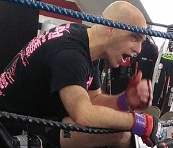
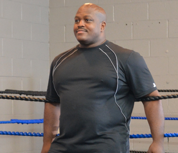
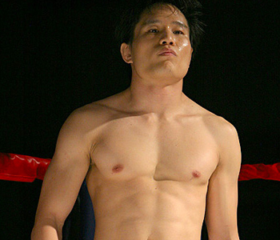
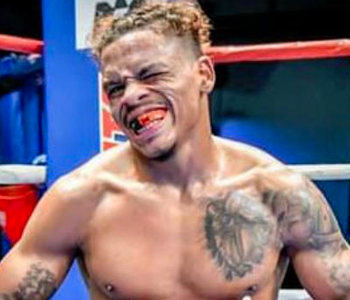
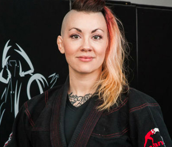
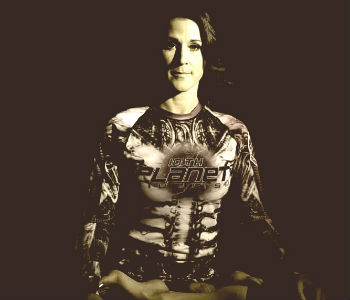

Meet Our Team
Coaches & Fighters
Full biographies for the coaches and fighters behind Fight Science MMA.
← Back to Team
Ian Harris
Head Coach & Founder
Ian has nearly 40 years of extensive martial arts experience, having traveled the world and trained with the best fighters and coaches. Ian originally trained in KenJuKai, a hybrid of Kempo, Wing Chun and Japanese Jujitsu, in which he holds a black belt. He then trained under Bruce Lee student Richard Bustillo, learning JKD, Muay Thai, Filipino Martial Arts, Boxing and Shooto. In 1995, Ian began training in Brazilian Jiu-Jitsu under Claudio Franca, and eventually received his black belt from UFC fighter Pedro Munhoz.
Through years of training and refining, Ian developed what he called Fight Science — the Science of Fighting rather than a Martial Art. In 2003, Ian began training fighters under the Fight Science MMA banner, producing champions and top contenders in shows from L.A. to Japan. In 2017, Ian and former fighters opened the first-ever Fight Science MMA Training Center in Mid-City Los Angeles.
Back to Top
Julian Rush
Coach
Julian has been training in Martial Arts for over 25 years, including Boxing, Kickboxing, Brazilian Jiu-Jitsu, Krav Maga, Haganah and TFT. He competed in BJJ tournaments from 1997–2005 and MMA from 2004–2007 under Coach Ian Harris, winning the Total Fighting Alliance Heavyweight Championship in 2006 and defending it until his retirement in late 2007.
During his time at UCLA, Julian was introduced to a number of traditional martial arts and freestyle wrestling, and trained alongside practitioners of Savate, Shuai Jiao, Panantukan and Kali. “There are underlying principles which permeate all martial arts, and it’s the understanding of those principles — and the techniques we use to apply them — which I look forward to sharing with my students during their training as I continue my own.”
Back to Top
Leo Hirai
Coach
Leo began martial arts through Aikido at age 12. After several years he sought a more combat-practical art, and started Brazilian Jiu-Jitsu in 1999 during grad school at UCLA through a BJJ club founded by Rickson Gracie. He simultaneously began organizing and competing in amateur MMA fights, studying Sambo-style leg locks, which ultimately became his specialization.
Leo met Ian Harris in 2004 and joined his pro MMA team, reuniting with Julian Rush, whom he knew from the UCLA BJJ club. In 2007, Leo fought for Shooto in their inaugural Shooto USA event. Though he no longer competes, Leo continues his life-long study of MMA with a love for grappling arts and a knack for leg-lock submissions.
Back to Top
Chris “Taco” Padilla
Kids Program Head Coach
Chris “Taco” Padilla is one of Fight Science’s brightest stars, with an incredible amount of experience for his age — fighting and competing since he was a teenager. He heads the Kids’ program at Fight Science MMA, where students love his young vibe, fun attitude and crazy hair, while parents appreciate how well he works with kids and his wealth of self-defense and martial arts knowledge.
Back to Top
Maria Chavez
Coach
Maria started training in Brazilian Jiu-Jitsu in 2004, and began competing and teaching in 2005. She won the No-Gi Worlds and No-Gi Nationals as a Blue Belt, and later competed and won at NAGA, Southwest Grapple Fest, Grapplers Quest and Kansas City Submission Only as a Brown Belt, winning both of her divisions in 2015.
She began her MMA journey in 2010, fighting for organizations including Bellator, RFA and BAMMA USA. Maria became a mother in 2016 and continues to train, teach and spread the MMA & Jiu-Jitsu love.
Back to TopMike Koelzer
Coach
Mike “The Misfit” Koelzer holds a Black Belt in BJJ under Rey Diogo from the Carlson Gracie Team, with 8 years of Muay Thai and Boxing under acclaimed coach Bryan Popejoy of Boxing Works in the South Bay. Mike started his fight career wrestling for Poway High School in San Diego, not realizing at the time he was pursuing a martial art.
He later lived a year in Brazil, where a roommate who was a BJJ black belt introduced him to the art. He moved back to the U.S. and pursued MMA after watching Forrest Griffin and Stephan Bonnar battle on the first episode of The Ultimate Fighter.
Back to Top
Jennifer Dietrick
Coach
Jennifer started in athletics as a competitive gymnast and track and field athlete as a teenager, later competing in fitness and figure shows. She transitioned into martial arts and currently competes in jiu-jitsu tournaments as a brown belt.
She has a combined total of 29 years of teaching experience in personal training, sports and high school education, holds a B.S. in Secondary Education for Biology, and previously taught high school Anatomy & Physiology and Biology for 7 years. She is a certified personal trainer working independently in the LA area.
Back to TopGet Started
Come Train With Us
Your first class is on us. Reach out and we’ll get you set up with a free trial class.